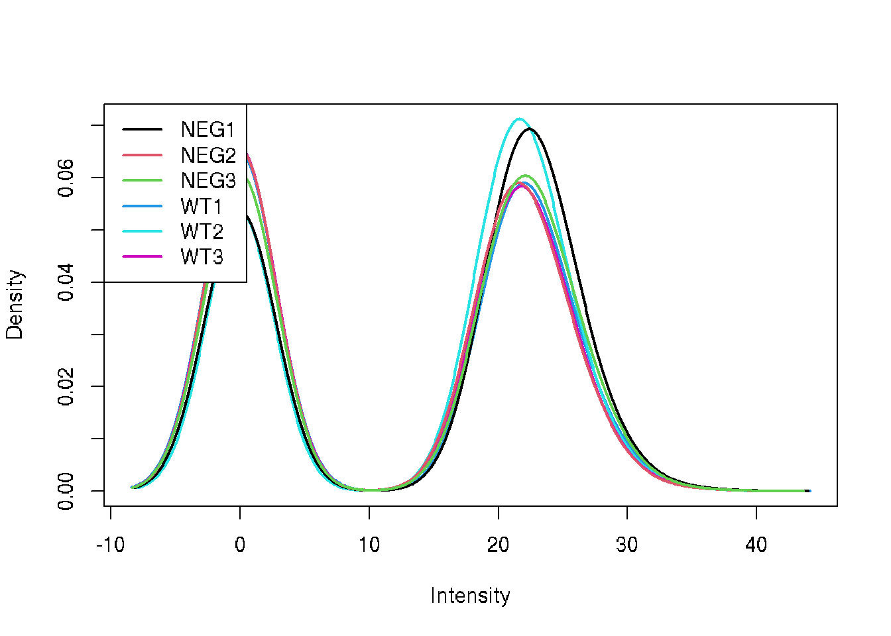
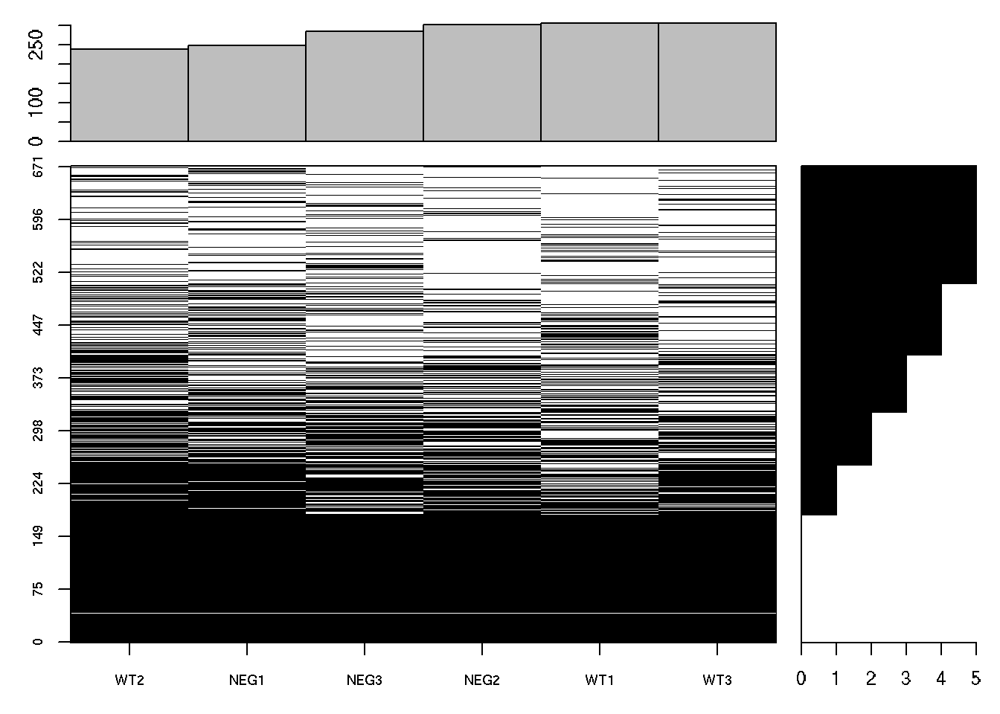
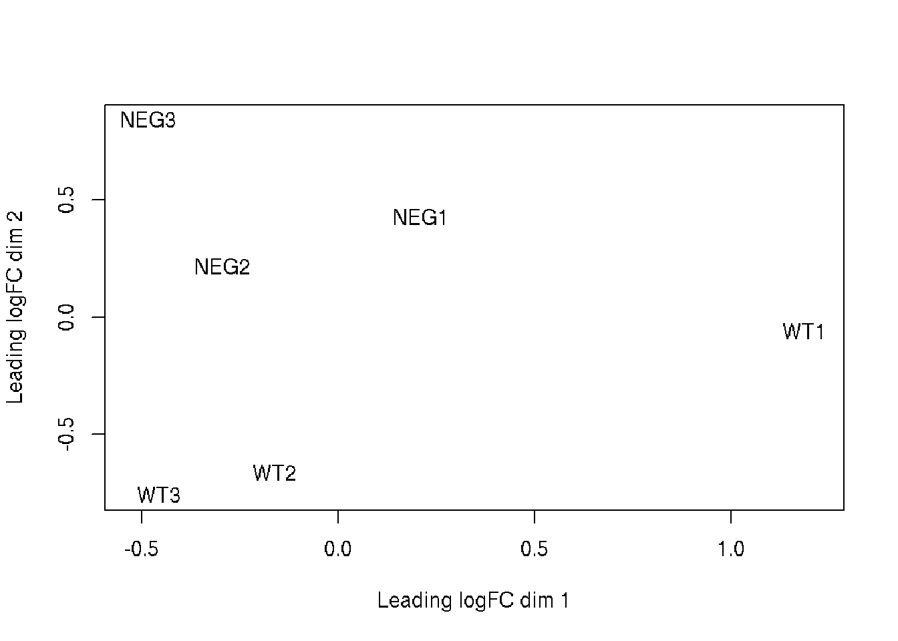

The aim of the R for mass spectrometry RforMassSpectrometry initiative is to provide efficient, thoroughly documented, tested and flexible R software for the analysis and interpretation of high throughput mass spectrometry assays, including proteomics and metabolomics experiments. The project formalises the longtime collaborative development efforts of its core members under the RforMassSpectrometry organisation to facilitate dissemination and accessibility of their work.
Two packages of interest:
This use case features a proximity tagging protein-protein interaction
dataset. In this experiment, a bait protein X was tagged using
BioID2. BioID
biotinylates proteins in close proximity of the bait X, in
particular, but not only, proteins interacting with X. These
proteins are then be recovered using streptavidin beads and
identified/quantified using mass spectrometry. The expectation is
that the proteins contain interaction partners of X. However, given
that a substantial number of false positives will also be
biotinylated, it is necessary to complement this data with a negative
control, where X is blocked from interacting with its partners. A
differential analysis between the wild type and the negative control
will reveal likely interacting partners of X.
Identify the most likely interactors of protein X.
bioid.csv
file
into R.pos variable to guide you:
TRUE referring to a set of expected true interactors, but there
might be more.library("MSnbase")
e <- readMSnSet2("./data/bioid.csv", ecol = 1:6, fnames = "ids")
e$grp <- sub("[1-3]", "", sampleNames(e))
sel1 <- fData(e)$Reverse == ""
sel2 <- fData(e)$Potential.contaminant == ""
e <- e[sel1 & sel2, ]
fData(e) <- fData(e)[, c("pos", "ids")]limma::plotDensities(log2(exprs(e) + 1))
exprs(e)[exprs(e) == 0] <- NA
(e$nNA <- colSums(is.na(e)))## WT1 WT2 WT3 NEG1 NEG2 NEG3
## 306 239 306 249 303 286fData(e)$nNA <- rowSums(is.na(e))
table(fData(e)$nNA)##
## 0 1 2 3 4 5
## 180 70 75 80 101 165table(is.na(e))##
## FALSE TRUE
## 2337 1689sum(is.na(e))/prod(dim(e))## [1] 0.4195231naplot(e, col = c("black", "white"))
e_norm <- e %>%
log(base = 2) %>%
normalise(method = "center.median")
limma::plotMDS(exprs(e_norm))
limma::plotDensities(exprs(e_norm))proDA: probabilistic dropout analysisWe will now try the proDA package for inference of protein
differential abundance by probabilistic dropout analysis
(Ahlman-Eltze and Anders
(2019)) that
explicity models missing values as lowly expressed features.
BiocManager::install("proDA")library("proDA")Below, we first fit the model using the grp variable.
proDA_fit <- proDA(e_norm,
design = ~ grp,
data_is_log_transformed = TRUE)## Warning in proDA(e_norm, design = ~grp, data_is_log_transformed = TRUE): The
## data contains a mix of 3 exact zeros and 1689 NA's. Will treat the zeros as
## valid input and not replace them with NA's.proDA_fit## Parameters of the probabilistic dropout model
##
## The dataset contains 6 samples and 671 proteins
## 42% of the values are missing
##
## Experimental design: y~grp
## The model has successfully converged.
##
## The inferred parameters are:
## location_prior_mean: -1.39
## location_prior_scale: 11.2
## location_prior_df: 3
## variance_prior_scale: 0.698
## variance_prior_df: 1.58
## dropout_curve_position: -1.45, -2.21, -1.6, -2.05, ...
## dropout_curve_scale: -1.45, -1.42, -1.8, -1.23, ...Here we extract the contract of interest, setting the alternative to greater to perform a one-sided test (we are only interested in proteins with greater expression in the wild type),
res <- test_diff(proDA_fit,
contrast = "grpWT",
alternative = "greater",
pval_adjust_method = "BH")
res %>%
arrange(adj_pval) %>%
filter(adj_pval < 0.1)## name pval adj_pval diff t_statistic se df
## 1 P8706942 8.187022e-05 0.02746746 7.173943 13.714795 0.5230806 4
## 2 P6582309 7.522092e-05 0.02746746 5.927238 14.013456 0.4229676 4
## 3 P2936078 2.029040e-04 0.04538285 4.164370 10.875132 0.3829259 4
## 4 P3615987 5.210113e-04 0.06991971 6.303470 8.518190 0.7400011 4
## 5 P8350629 4.448527e-04 0.06991971 5.797451 8.876805 0.6531010 4
## avg_abundance n_approx n_obs
## 1 1.4194278 5.024484 5
## 2 5.9448285 6.000000 6
## 3 4.8919507 6.000000 6
## 4 0.9925385 4.073695 4
## 5 1.9230349 3.811684 4Below, we integrate the results in the MSnSet and visualise them
using a volcano plot. We observe an enrichment in true positives.
stopifnot(identical(res$name, featureNames(e_norm)))
fData(e_norm) <- cbind(fData(e_norm), res)
with(fData(e_norm),
plot(diff, -log10(adj_pval),
col = as.numeric(pos) + 1))
abline(h = -log10(0.05))
abline(h = -log10(0.1), lty = "dotted")ms2df(e_norm) %>%
arrange(adj_pval) %>%
filter(adj_pval < 0.1)## WT1 WT2 WT3 NEG1 NEG2 NEG3 pos
## P8706942 4.809723 4.843454 5.614666 -2.3246799 -1.978230 NA FALSE
## P6582309 8.886493 8.917121 9.096700 2.7715624 3.530842 2.837897 TRUE
## P2936078 6.811807 7.003624 7.264089 2.7718795 2.920089 2.896690 TRUE
## P3615987 3.934746 4.958431 3.888658 -1.9859032 NA NA TRUE
## P8350629 5.046591 5.039421 4.638563 -0.5905618 NA NA TRUE
## ids nNA name pval adj_pval diff t_statistic
## P8706942 P8706942 1 P8706942 8.187022e-05 0.02746746 7.173943 13.714795
## P6582309 P6582309 0 P6582309 7.522092e-05 0.02746746 5.927238 14.013456
## P2936078 P2936078 0 P2936078 2.029040e-04 0.04538285 4.164370 10.875132
## P3615987 P3615987 2 P3615987 5.210113e-04 0.06991971 6.303470 8.518190
## P8350629 P8350629 2 P8350629 4.448527e-04 0.06991971 5.797451 8.876805
## se df avg_abundance n_approx n_obs
## P8706942 0.5230806 4 1.4194278 5.024484 5
## P6582309 0.4229676 4 5.9448285 6.000000 6
## P2936078 0.3829259 4 4.8919507 6.000000 6
## P3615987 0.7400011 4 0.9925385 4.073695 4
## P8350629 0.6531010 4 1.9230349 3.811684 4table(fData(e_norm)$pos,
fData(e_norm)$nNA)##
## 0 1 2 3 4 5
## FALSE 176 70 73 78 99 165
## TRUE 4 0 2 2 2 0Page built: 2021-03-12